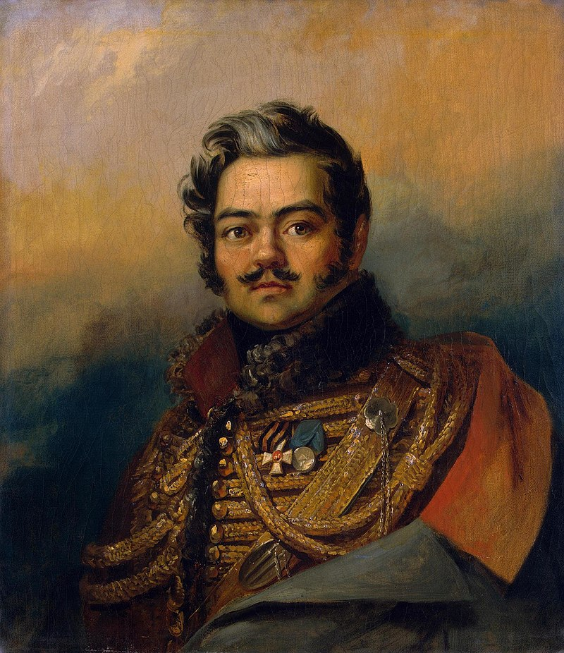
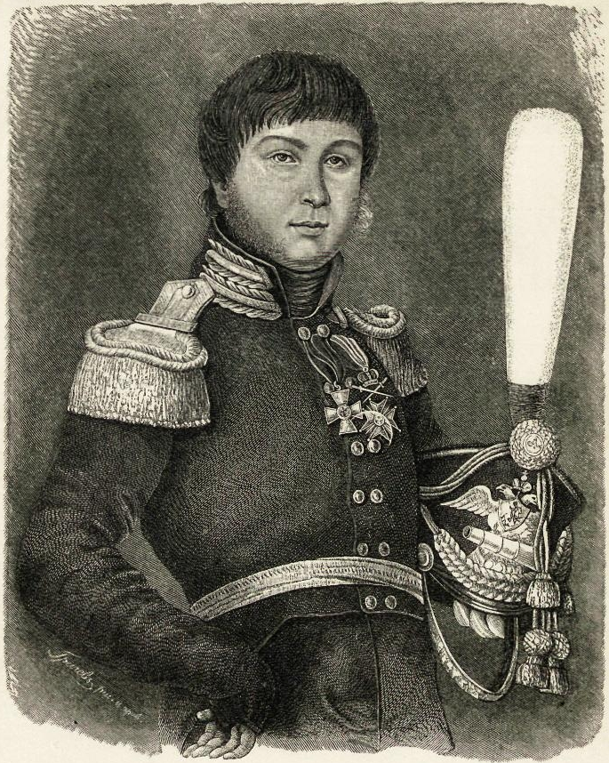
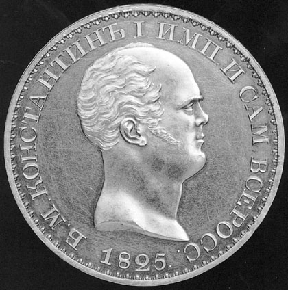
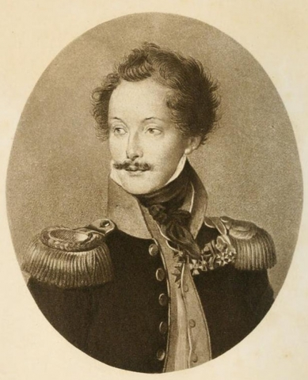
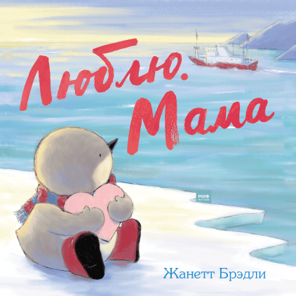

연애 편지와 엄마 - 포로들의 운명
게시: 2021-07-26T06:30:46+09:00
나폴레옹의 그랑다르메가 이렇게 식량 부족과 추위로 부서져 내리면서 당연히 많은 낙오병이 생겼습니다. 그런데 여태까지의 글을 보시면서 낙오병이라는 단어는 많이 보셨지만 탈영병이라는 표현이 별로 많이 등장하지 않았다는 것을 눈치 채신 분들이 계신지 모르겠습니다. 그랑다르메 중에서도 지배층에 속하는 프랑스군은 그렇다치고, 끌려온 것이나 다름 없는 독일군이나 네덜란드군, 이탈리아군 중에는 쫄쫄 굶다 못해 그냥 탈영해서 스스로 러시아군으로 넘어간 병사들이 많지 않았을까요 ? 적지는 않았습니다. 그러나 상대는 러시아군이었고, 이렇게 포로가 된 이들의 운명은 결코 순탄하지 않았습니다. 당시엔 아직 제네바 조약 같은 포로에 대한 국제 협약 같은 것이 존재하지 않는 때였습니다만, 대신 유럽 사회를 지배하던 귀족 내지는 신사들의 계급 정신이 살아있던 시대였습니다. 뜻하는 바는 일반 병사들의 운명은 알 바 아니지만 적어도 포로가 된 장교들에 대한 대우는 어느 정도 보장이 되었다는 이야기였습니다. 그런데 장교 출신들조차도 러시아군의 포로가 되면 목숨을 부지하기가 쉽지 않았습니다. 러시아가 괜히 유럽 전체의 공포와 경멸을 동시에 받는 대상이 아니었습니다. 중서부 유럽에서는 당연히 여겨지는 불문률이 러시아에서는 그다지 당연하지 않았습니다. 그리고 러시아인들도 자신들이 중서부 유럽과는 조금 다르다는 것을 알고 있었고, 특히 서구화되기를 원하면서 일상 생활에서 프랑스어를 쓰던 귀족들 사이에서는 그런 이질감을 없애려고 많은 노력을 했습니다. 누구보다도, 짜르 알렉산드르가 그랬습니다. 그는 굼뜨기 이를데 없는 쿠투조프에게 이런저런 불만이 많았습니다만, 특히 그랑다르메의 포로들에 대한 가혹 행위와 학살에 대한 보고가 올라오는 것에 대해 특별히 따로 친서를 보내 그런 일이 결코 재발하지 않도록 엄중 경고했습니다. 그는 포로들에게 인간적인 대우를 해주고 생존을 위한 최소한의 식량과 의복을 지급하라 명령했습니다. 그리고 '경기병 문학'이라는 독특한 문학 장르를 개척한 게릴라 전투 지휘관인 다비도프(Denis Vasilyevich Davydov)도 최소한 장교 출신 포로들에 대해서는 신사적인 대우를 해주려고 많은 노력을 기울였습니다. 그는 포로로 잡힌 베스트팔렌 출신 경기병 중위가 코삭들에게 연인이 준 금반지와 목걸이함(locket), 그리고 무엇보다 연애 편지를 빼앗겼다는 것을 알고는 그것들을 찾아 그 베스트팔렌 중위에게 돌려주기 위해 지나치다 싶을 정도의 노력을 기울였습니다. 쿠투조프도 프랑스 포로, 특히 장교 등의 신사 계급 포로들에게는 자비로왔습니다. 레이몽 포레(Raymond Faure)라는 군의관이 빈코보(Vinkovo) 전투에서 다른 장교들과 함께 포로가 되어 쿠투조프 앞으로 끌려오자, 그는 그들을 정중하게 대하며 옷가지와 돈을 선물로 주어 후방으로 호송하도록 했습니다.

(다비도프입니다. 원래 타타르족을 먼 조상으로 둔 그는 바그라티온의 제2군 소속 중령이었는데 바그라티온의 허락을 받고 소수의 기병대를 지휘하여 그랑다르메의 후방 보급로를 습격하는 역할을 맡았습니다. 쿠투조프가 바클레이를 대체하여 총지휘관이 된 이후에도 쿠투조프의 승인을 받고 후방에서 농민들을 규합하여 그랑다르메를 괴롭히는 임무를 매우 훌륭하게 수행했습니다.) 하지만 문제는 그렇게 서구인들에게 잘 보여서 문화 후진국 러시아의 국가 브랜드를 제고하려고 노력한 지휘관들이 별로 많지 않았다는 것이었습니다. 위에서 쿠투조프로부터 옷과 돈을 선물로 받은 포레와 그의 동료들은 쿠투조프의 본진을 벗어나자마자 자신들을 호송하던 민병대 장교들에게 흠씬 두들겨 맞고 선물받은 것을 모조리 빼앗겼습니다. 다비도프의 동료 지휘관인 피그너(Aleksandr Samoilovich Figner)만 해도 프랑스 포로에 대해 특히 가학적 성향을 드러내며 마구 학대하며 직접 살해하는 것도 마다하지 않았습니다. 고위 장성이자 보로디노 전투에서 용감히 싸웠던 예르몰로프(Aleksey Petrovich Yermolov)도 포로들을 마구 대했는데, 이 양반은 특히 폴란드 포로들에게 대해 매우 심하게 대했습니다. 러시아 민족주의자였던 예르몰로프는 프랑스 측에 충성하는 폴란드인들을 슬라브 민족주의에 대한 배신자들이라고 생각했기 때문이었습니다. 그는 플라터(Plater)라는 백작 지위의 장교를 포로로 잡자 그의 얼굴에 침을 뱉으며 그를 호송하는 코삭에게 '저 놈에게는 채찍질 세례 말고는 아무 것도 먹을 것을 주지 말라'고 명령했는데, 포로로 잡힌 장교를 이렇게 모욕적으로 대우하는 일은 당시 유럽 사회에서는 상상하기 어려운 일이었습니다.

(피그너는 원래 근위대 대령 출신으로 후방 게릴라 조직 및 지휘에 투입되었습니다. 그는 특히 프랑스 포로들에 대한 폭력을 즐기는 것으로 악명이 높았고, 이로 인해 다비도프로부터 맹비난을 받기도 했습니다. 그는 다음 해인 1813년 데사우(Dessau)에서 프랑스군의 포위망을 벗어나기 위해 엘베 강을 헤엄치다가 익사했습니다.) 포로들에 대한 가혹 행위 끝판왕은 다름아닌 짜르의 친동생 콘스탄틴(Konstantin Pavlovich) 대공이었습니다. 당시 러시아 야전군에 배속되어 있던 영국군 고문관인 윌슨 장군의 증언에 따르면, 자신을 포함한 일단의 고위 장교들이 콘스탄틴 대공과 함께 말을 타고 가던 길에 한무리의 프랑스 포로들이 끌려오는 것을 만나게 되었습니다. 그 중 굉장히 잘 생긴 젊은 장교 하나가 모두의 눈길을 끌었는데, 콘스탄틴 대공은 그를 향해 차라리 죽고 싶지 않으냐고 비웃었습니다. 그런 조롱 자체가 굉장히 야만스러운 학대인데, 그 젊은 장교가 '영양실조와 추위, 학대 때문에 어차피 곧 죽을 것 같으니 차라리 죽여라'라고 답을 하자 콘스탄틴은 정말 군도를 뽑아 경악하는 윌슨 앞에서 직접 그 포로를 죽였다고 합니다.

(콘스탄틴 대공의 얼굴이 새겨진 1825년의 루블 은화입니다. 짜르도 아닌 짜르 동생의 얼굴을 담은 은화가 주조된 것은 1825년 알렉산드르 1세의 죽음 이후 딱 25일 간 짜르로 인정되었기 때문입니다. 콘스탄틴이 거절한 황위는 결국 그 아래 동생인 니콜라스에게 넘어갔습니다만, 그 사이에 벌어진 혼란 속에서 데카브리스트 반란이 벌어집니다. 그는 저런 포악한 러시아 민족주의 성향 때문에 형 알렉산드르로부터 질책을 받았지만 정작 귀족 사회에서는 그를 따르는 인물이 많았다고 합니다.) 그랑다르메의 병사들도 이런 사정을 잘 알고 있었습니다. 모스크바로 진격하는 과정에서도 러시아군에게 포로가 되었다가 탈출한 병사들이 꽤 있었기 때문이었습니다. 뭐니뭐니 해도, 자신들이 여태까지 진격해오면서 러시아 농민들에게 저질렀던 온갖 흉악한 짓들을 생각하면 러시아 농민들이 자신들에게 좋은 대접을 해줄 리가 없다는 것을 모를 수가 없었습니다. 따라서 이들은 총을 버리고 부대에서 이탈하면서도 프랑스군 주변에서 벗어나지 않고 어떻게든 그랑다르메와 함께 서쪽으로 서쪽으로 계속 걸었습니다. 특히 장교가 아닌 일반 병사 포로들은 쿠투조프나 다비도프 같은 교양파 지휘관들도 거들떠 보지도 않았습니다. 이런 병사들은 대개 낙오되었다가 코삭 기병에 의해 포로가 되었는데, 포로가 되는 순간 일단 코삭들에게 흠씬 두들겨맞고 귀중품은 물론 낡은 옷가지까지 탈탈 약탈을 당해야 했습니다. 그렇게 속옷 상태로 코삭들에게 끌려간 포로들은 인근 마을의 농민들에게 넘겨지거나, 어떤 경우에는 돈을 받고 팔기도 했습니다. 왜 러시아 농민들은 돈을 주면서까지 이런 포로들을 받았을까요? 분풀이를 위해서였습니다. 운이 좋으면 이들은 그냥 목이 따였지만 어떤 경우엔 순박한 만큼 잔혹한 농민들에게 가학적으로 고문을 당하며 살해되었습니다. 나무에 묶어놓고 귀와 코, 혀와 x추를 하나씩 잘라내기도 하고 쓰러진 나무에 나란히 턱을 대고 엎드린 상태로 묶어놓고 남녀노소 주민들이 몰려나와 춤을 추고 노래를 부르며 몽둥이로 죽을 때까지 머리통을 두들겨 패기도 했습니다. 어떤 마을에서는 양심적인 러시아 정교 신부님이 그런 농민들의 잔인함을 꾸짖으며 '자비심을 베풀어야 한다, 그러니 얼어붙은 강을 깨고 저들을 밀어넣어 빨리 죽여야 한다'라고 호소하기도 했습니다. 러시아군 기병 장교였던 뢰벤슈테른(Woldemar von Löwenstern)은 도로고부즈(Dorogobuzh)에서 낙오된 그랑다르메의 비무장 민간 군속들을 농민들이 도끼와 몽둥이, 쇠스랑 등으로 학살하는 장면을 보며 그 농민들의 얼굴에 떠오르는 맹렬한 기쁨의 표정에서 두려움을 느꼈다고 적었습니다.

(이름에서 알 수 있듯이 뢰벤슈테른도 전형적인 발트해 지역 독일계 러시아 귀족이었습니다. 그는 리보니아(Livonia)라고 불리던 발트해 연안의 1790~1815 시간의 상황에 대해 회고록을 남겼습니다.) 당연히 러시아인들이 모두 잔인한 복수자였던 것은 아니었습니다. 제8 엽기병 연대의 콩브(Julien Combe) 중위는 아직 말을 가지고 있던 행운아였는데, 저녁에 말에게 먹일 풀을 찾다가 그만 눈 오는 밤에 길을 잃고 낙오병이 되고 말았습니다. 어둠 속을 헤매던 그는 천만다행으로 외딴 농가를 발견하고 거기서 러시아 농부 부부의 양해 하에 하룻밤을 보냈습니다. 고달픈 신세와 앞날에 대한 걱정으로 잠을 이루지 못하던 콩브 중위는 농가 구석의 어두운 곳에서 갑자기 '마마'(러시아어로도 엄마는 마마네요. 키릴 문자로도 Мама 입니다)라는 아기 목소리를 듣고 깜짝 놀랐습니다. 아기의 해먹 침대가 구석에 있는 것을 못 봤던 것입니다. 프랑스어로 엄마는 '마망'(Maman)이었기 때문에 그게 무슨 소리인지 대번에 알아들은 콩브 중위는 잊고 있었던 가족과 행복, 집에 대한 기억이 한꺼번에 몰려오면서 감정을 주체하지 못하고 그 아기를 끌어앉고 울었습니다. 뒤늦게 그 모습을 본 주인 아주머니는 그 불쌍한 젊은 프랑스 청년을 보고 동정심이 생겼나 봅니다. 나중에 코삭 부대가 집 근처로 다가오자, 미리 그 사실을 알려주고 먹을 것과 함께 탈출로를 알려주어 콩브 중위는 무사히 본대로 돌아올 수 있었습니다.

('사랑해요, 엄마' 라는 러시아 키릴 문자입니다.) 러시아군이 포로들을 이렇게 학대한 것에는 나름 이유가 있었습니다. 무엇보다, 이들은 신성한 조국을 침략하고 농민들을 잔혹하게 수탈한 침략군이었습니다. 외국군이 수시로 침공해와서 자기들끼리 싸움질을 했던 중서부 유럽과는 달리, 러시아는 꽤 오랜 기간 동안 외국군의 침공을 받아보지 않았고 따라서 유럽 농민들이 느낀 것에 비해 외국군의 존재 자체가 엄청난 공포였습니다. 원래 겁에 질린 군중이 훨씬 더 잔인한 법입니다. 게다가 러시아군도 힘들기는 마찬가지였습니다. 러시아군이 비록 보급 상태가 좀 더 낫고 방한복도 좀 더 두껍게 갖춰 입었다고 해도, 배고픈 것도 마찬가지였고 추운 것도 마찬가지였습니다. 러시아군도 동사자와 아사자, 그리고 낙오병이 수천명씩 발생하고 있었습니다. 그런 상황에서 포로에게 먹을 것과 입을 것을 줄 형편이 아니었습니다. 그리고 프랑스군은 결코 러시아군의 극악한 포로 대우에 대해 불평할 처지가 아니었습니다. 포로들을 굶기고 죽인 것은 누구보다 그들 자신이 먼저 행한 악행이었기 때문이었습니다. 이런 아비규환 속에서 11월 9일, 마침내 나폴레옹은 꿈에도 그리던 약속의 도시 스몰렌스크에 도달합니다. 겨울 숙영지로 지정되어 물자가 축적된 스몰렌스크에서 그를 기다리던 것은 무엇이었을까요? 길거리에 흘러넘치는 젖과 꿀은 분명히 아니었습니다. Source : 1812 Napoleon's Fatal March on Moscow by Adam Zamoyski
https://en.wikipedia.org/wiki/Denis_Davydov
https://en.wikipedia.org/wiki/Aleksandr_Figner
https://en.wikipedia.org/wiki/Grand_Duke_Konstantin_Pavlovich_of_Russia